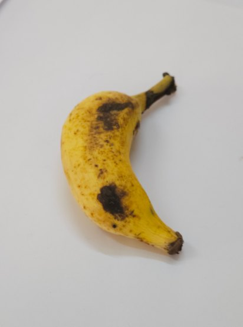
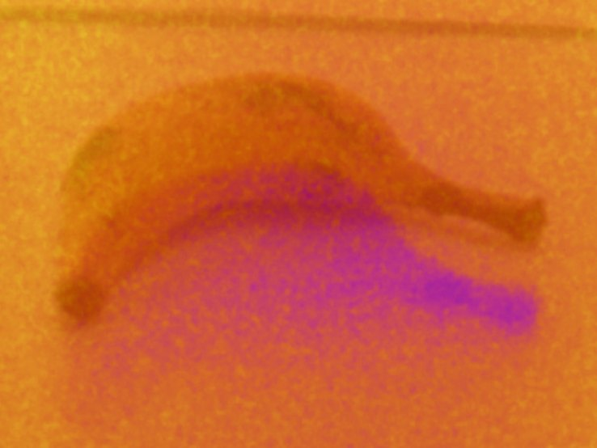

M.Tech Thesis Project · School of Computing, Amrita Vishwa Vidyapeetham
Can a machine tell that your produce is going bad, before it looks spoiled?
A trimodal deep learning system that fuses ordinary photographs, thermal imaging, and a methane gas sensor to detect spoilage in six fruit and vegetable types, keeps working when a sensor drops out, and is evaluated with the statistical rigor a twelve-specimen dataset actually demands.
Three senses, one judgment
A person checking whether a mango has turned uses more than their eyes: they might press it, smell it, feel its temperature. Most automated spoilage detectors use only a camera. This project asks what changes when a model can draw on three different physical channels at once, and how much of that promise actually survives contact with a small, real dataset.
Here is one TR-6 specimen through all three channels. Switch between them, or between the fresh and the spoiled banana.


sRGB camera| Mean concentration | x₁ |
| Spread within the session | x₂ |
| Left sensor / right sensor | x₃, x₄ |
| Left–right asymmetry | x₅ |
| Session (morning, afternoon, evening) | x₆ |
Days with no reading are passed to GRU-D with a mask instead of a made-up value.
A mask-gated cross-modal attention layer and a temporal Transformer fuse these three streams across a specimen's observed history, leaving out any sensor that did not report on a given day, and produce both a spoiled / not-spoiled classification and a days-until-spoilage estimate.
Pull a sensor
Real sensors fail: gas sensors drift, thermal cameras fog up in humid storage, images get lost. Pick a sensor and drag the slider to switch it off on more and more days. The bars are real validation F1-scores from the robustness sweep (10 seeds × 5 random repeats each).
All sensors working. Drag the slider to switch the gas sensor off on more and more days.
Bar length shows F1 from 0.50 to 0.75. Full statistics and the test-set version are on the Results page.
What the evaluation actually found
Twelve specimens is not a lot of evidence. Most of this project's effort went into finding out which apparent findings were real and which were artefacts of that small sample, not just reporting the headline number.
| F1 | AUC | MAE (days) | RMSE (days) | R² |
|---|---|---|---|---|
| 0.8000 | 0.7333 | 0.9188 | 1.0593 | 0.0439 |
All six spoiled test trajectories were detected. With a sensor switched off on up to half of the days, the model kept the highest F1 in most single-sensor conditions, and its advantage under gas-sensor and thermal-camera failure stayed significant after correcting for all 29 comparisons.
No individual component could be shown to matter at this sample size. The model generalises to a completely unseen produce type in only 1 of 6 leave-one-fruit-out folds, and three separate attempts to fix the shelf-life regression head all failed. Both are reported in full on the Results page, not omitted.
See how each of these was actually tested, in the investigations log on the Methodology page. Or try switching a sensor off yourself in the robustness explorer.
Project at a glance
| Problem statement | Detect spoilage from sight, heat and gas when any sensor may be missing | Objectives & Problem |
| Objectives | Six objectives, from trimodal fusion to honest reporting | Objectives |
| Methodology | Clickable architecture, equations, training recipe, investigation log | Methodology |
| Dataset | TR-6 gallery for every class, splits and timescales | Dataset |
| Results | Test performance, robustness explorer, ablation, generalisation | Results |
| Progress | Nine phases, from data pipeline to dissemination | Progress |
| Documentation | Notebook pipeline, how to reproduce, how to cite | Documentation |
| Demonstrations | Four captioned walkthrough videos | Demonstrations |
| Code | Notebooks and pipeline on GitHub | GitHub repository |
| Team | Sri Janani S, guided by Dr. Bagyammal T. | Team |
Built on TR-6
Six fruit and vegetable types (banana, carrot, guava, Indian gooseberry, mango, and tomato), each tracked daily across synchronised sRGB, thermal, and gas-sensor readings from fresh through spoiled. Browse every class through both cameras on the Dataset page.